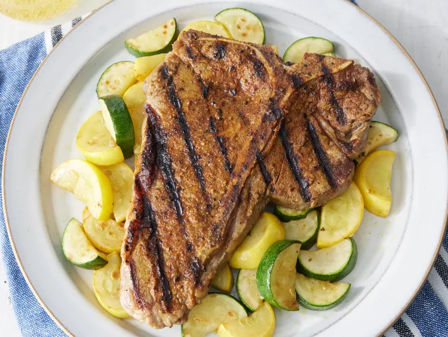

Home
Rock's T-bone Steak

Description
Grill a T-bone steak with this easy homemade seasoning to make it taste awesome. This spice blend is the best, as it doesn't overpower the steak flavor. I can't eat a steak out anymore because I always compare it to this seasoning.
Ingredients
- 4 teaspoons salt, or to taste
- 2 teaspoons paprika
- 1 ½ teaspoons ground black pepper
- ¾ teaspoon onion powder
- ¾ teaspoon garlic powder, or to taste
- ¾ teaspoon cayenne pepper, or to taste
- ¾ teaspoon ground coriander, or to taste
- ¾ teaspoon ground turmeric, or to taste
- 4 (16 ounce) t-bone steaks, at room temperature
Steps
- Gather all ingredients.
- Preheat an outdoor grill for high heat and lightly oil the grate.
- Stir together salt, paprika, black pepper, onion powder, garlic powder, cayenne pepper, coriander, and turmeric in a small bowl.
- Rub seasoning over steaks on all sides.
- Cook steaks on the preheated grill to the desired degree of doneness, 3 to 3 1/2 minutes per side for medium-rare. An instant-read thermometer inserted into the center of each steak should read 130 degrees F (54 degrees C).